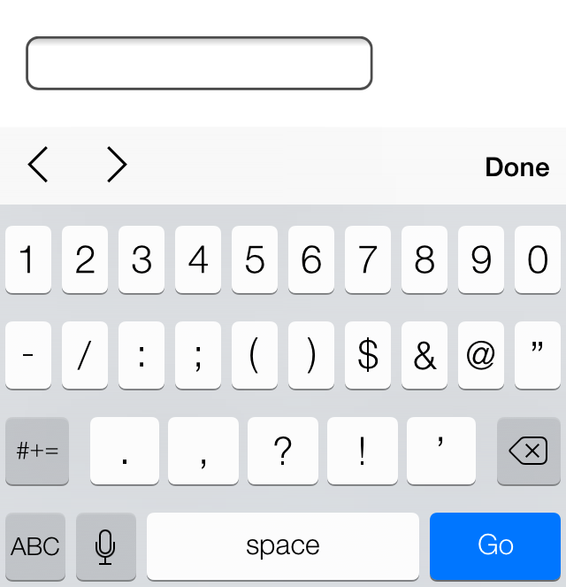

Построение форм
Формы являются неотъемлемой частью Интернета, так как они предлагают сайтам метод сбора информации от пользователей и обработки запросов, а также элементы управления практически для любого мыслимого применения. С помощью элементов управления или полей, формы могут запросить небольшой объём информации — часто это поисковый запрос, имя пользователя или пароль. Или большой объём информации — возможно, данные о посылке, платёжная информация или предложение работы.
Мы должны знать как создавать формы чтобы получить входные данные от пользователя. В этом уроке мы обсудим, как использовать HTML для разметки формы, какие элементы использовать для захвата разных типов данных и как стилизовать формы с помощью CSS. Мы не станем слишком углубляться в то, как информация из формы обрабатывается на стороне сервера. Обработка форм представляет собой глубокую тему, вне области этой книги; здесь мы будем придерживаться создания и стилизации форм.
Инициализация формы
Чтобы добавить форму на страницу мы будем использовать элемент <form>. Данный элемент определяет, где на странице появятся элементы управления. Кроме того, элемент <form> обёртывает все элементы включенные в форму, подобно элементу <div>.
<form action="/login" method="post">
...
</form>К элементу <form> может применяться горстка различных атрибутов, наиболее распространёнными из которых являются action и method. Атрибут action содержит URL, на который информация в форме будет отправлена для обработки сервером. Атрибут method является методом HTTP, который должны использовать браузеры для отправки данных формы. Оба эти атрибута <form> имеют отношение к отправке и обработке данных.
Текстовые поля и текстовые области
Когда дело доходит до сбора текстовой информации от пользователей, есть несколько разных элементов, доступных для получения данных в формах. В частности, для сбора данных на основе текста или строки применяются текстовые поля и текстовые области. Эти данные могут включать в себя отрывки текста, пароли, номера телефонов и другую информацию.
Текстовые поля
Одним из основных элементов, используемых для получения текста от пользователей, является элемент <input>. Данный элемент включает атрибут type для определения, какой тип информации будет получен в элементе управления. Наиболее популярное значение атрибута type — это text, который обозначает ввод одной строки текста.
Наряду с установкой атрибута type, хорошей практикой будет также дать элементу <input> атрибут name. Значение атрибута name применяется в качестве имени элемента управления и отправляется вместе с входными данными на сервер.
<input type="text" name="username">Демонстрация текстового поля
Элемент <input> является самостоятельным, то есть он задействует только один тег и не оборачивает какой-либо контент. Значение элемента обеспечивается его атрибутами и их соответствующими значениями.
Первоначально было только два текстовых значения атрибута type — text и password (для ввода паролей), однако HTML5 привёз с собой несколько новых значений атрибута type.
Эти значения были добавлены, чтобы обеспечить чёткое смысловое значение для полей ввода, а также предоставить лучшее управление пользователям. Если браузер не понимает одно из этих HTML5-значений атрибута type, он автоматически вернётся к значению text. Ниже приведён список новых типов HTML5.
- color
- date
- datetime
- month
- number
- range
- search
- tel
- time
- url
- week
Следующие элементы <input> показывают некоторые из этих значений атрибута type из HTML5 в использовании, а на рисунках показано, как эти уникальные значения могут выглядеть в iOS. Обратите внимание, что различные значения обеспечивают разные элементы управления, все они делают сбор информации от пользователей проще.
<input type="date" name="birthday">
<input type="time" name="game-time">
<input type="email" name="email-address">
<input type="url" name="website">
<input type="number" name="cost">
<input type="tel" name="phone-number">
Рис. 10.01. Элемент <input> со значением date у атрибута type для iOS7

Рис. 10.02. Элемент <input> со значением time у атрибута type для iOS7
Рис. 10.03. Элемент <input> со значением email у атрибута type для iOS7
Рис. 10.04. Элемент <input> со значением url у атрибута type для iOS7

Рис. 10.05. Элемент <input> со значением number у атрибута type для iOS7

Рис. 10.06. Элемент <input> со значением tel у атрибута type для iOS7
<textarea>
Ещё одним элементом, используемым для сбора текстовых данных, является элемент <textarea>. Он отличается от элемента <input> тем, что может принимать большие отрывки текста в несколько строк. Элемент <textarea> также содержит начальный и конечный теги, которые могут обернуть простой текст. Поскольку <textarea> принимает только один тип значения, атрибут type здесь не применим, но атрибут name по прежнему используется.
<textarea name="comment">Добавьте сюда свой комментарий</textarea>Демонстрация текстовой области
Поля множественного выбора и меню
Помимо текстовых полей, HTML также позволяет пользователям выбирать данные, используя множественный выбор и раскрывающиеся списки. Есть несколько разных вариантов и полей для этих элементов формы, каждый из которых имеет свои отличительные преимущества.
Переключатели
Переключатели — это простой способ, позволяющий пользователям сделать быстрый выбор из небольшого списка вариантов. Переключатели дают пользователю выбрать только один вариант в отличие от нескольких.
Чтобы создать переключатель, используется элемент <input> со значением radio у атрибута type. Каждый переключатель должен иметь одинаковое значение атрибута name, чтобы все они в группе были связаны друг с другом.
С текстовыми полями их значение определяется тем, что пользователь в них набирает; с переключателями пользователь делает множественный выбор. Таким образом, мы должны определить входное значение. Используя атрибут value мы можем установить конкретное значение для каждого элемента <input>.
Кроме того, для предварительного выбора переключателя мы можем использовать логический атрибут checked.
<input type="radio" name="day" value="Friday" checked> Пятница
<input type="radio" name="day" value="Saturday"> Суббота
<input type="radio" name="day" value="Sunday"> ВоскресеньеДемонстрация переключателей
Флажки
Флажки очень похожи на переключатели. Они используют те же атрибуты и шаблоны, за исключением значения атрибута type. Разница между ними состоит в том, что флажки позволяют пользователям выбрать несколько значений и связать их все с одним именем, в то время как переключатели ограничивают пользователей одним значением.
<input type="checkbox" name="day" value="Friday" checked> Пятница
<input type="checkbox" name="day" value="Saturday"> Суббота
<input type="checkbox" name="day" value="Sunday"> ВоскресеньеДемонстрация флажков
Выпадающие списки
Выпадающие списки являются идеальным способом, чтобы практическим образом предоставить пользователям длинный список вариантов. Длинный столбец переключателей рядом со списком разных вариантов не только визуально непривлекателен, но кроме того сложен и труден для понимания, особенно на мобильном устройстве. Выпадающие списки, с другой стороны, обеспечивают идеальный формат для длинного списка вариантов.
Для создания выпадающего списка мы будем применять элементы <select> и <option>. Элемент <select> оборачивает все пункты меню, а каждый пункт меню размечен с помощью элемента <option>.
Атрибут name располагается в элементе <select>, а атрибут value располагается в элементах <option>, вложенных в элемент <select>. Таким образом, атрибут value в каждом элементе <option> связан с атрибутом name элемента <select>.
Каждый элемент <option> оборачивает текст (который виден пользователям) отдельного пункта в списке.
Подобно логическому атрибуту checked у переключателей и флажков, для выпадающего меню можно использовать логический атрибут selected, чтобы предварительно выделить пункт для пользователей.
<select name="day">
<option value="Friday" selected>Пятница</option>
<option value="Saturday">Суббота</option>
<option value="Sunday">Воскресенье</option>
</select>Демонстрация выпадающего списка
Множественный выбор
Логический атрибут multiple при добавлении к элементу <select> для стандартного выпадающего списка позволяет пользователю выбрать более одного варианта из списка одновременно. Кроме того, с помощью логического атрибута selected, добавленного к более чем одному элементу <option>, в меню можно заранее выбрать несколько вариантов.
Размером элемента <select> можно управлять с помощью CSS и он должен быть скорректирован соответствующим образом для множественного выбора. Возможно, есть смысл информировать пользователей, что для выбора нескольких вариантов они должны удерживать клавишу Shift во время щелчка, чтобы сделать выбор.
<select name="day" multiple>
<option value="Friday" selected>Пятница</option>
<option value="Saturday">Суббота</option>
<option value="Sunday">Воскресенье</option>
</select>Демонстрация множественного выбора
Кнопки в форме
После того, как пользователь вводит запрашиваемую информацию, кнопки позволяют пользователю пустить эту информацию в дело. Чаще всего для обработки данных используются поле или кнопка для отправки.
Поле для отправки
Когда пользователь щёлкает по кнопке, данные формы обрабатываются после её заполнения. Кнопка для отправки создаётся с помощью элемента <input> со значением submit у атрибута type. Атрибут value применяется для указания текста, который отображается внутри кнопки.
<input type="submit" name="submit" value="Отправить">Демонстрация поля для отправки
Кнопка для отправки
Кнопка для отправки в виде элемента <input> является самодостаточной и не может оборачивать любой другой контент. Если хочется иметь больше контроля над структурой и дизайном поля, наряду с возможностью обернуть другие элементы — тогда может быть использован элемент <button>.
Элемент <button> выполняет то же самое, что и элемент <input> со значением submit у атрибута type. Однако, он включает в себя открывающий и закрывающий теги, которые могут обернуть другие элементы. По умолчанию, элемент <button> действует, как если у атрибута type задано значение submit, поэтому атрибут type и его значение можно по желанию опустить.
Вместо использования атрибута value для управления текстом в кнопке для отправки, будет показан текст, который пишется между открывающим и закрывающим тегами элемента <button>.
<button name="submit">
<strong>Отправьте нам</strong> сообщение
</button>Демонстрация кнопки для отправки
Другие поля
Помимо применения, которое мы только что обсудили, элемент <input> имеет несколько других вариантов использования. Они включают в себя получение скрытых данных и прикрепление файлов в процессе обработки формы.
Скрытое поле
Скрытые поля предоставляют способ передачи данных на сервер без отображения их пользователям. Скрытые поля обычно используются для отслеживания кодов, ключей или другой информации, которая не имеет отношения к пользователю, но может быть полезна при обработке формы. Эта информация не отображается на странице, однако может быть найдена путём просмотра исходного кода страницы. По этой причине она не должна применяться для уязвимой или защищённой информации.
Чтобы создать скрытое поле используйте значение hidden атрибута type. Дополнительно включает в себя соответствующие значения атрибутов name и value.
<input type="hidden" name="tracking-code" value="abc-123">Поле для файла
Чтобы позволить пользователям добавить файл в форму, вроде прикрепления файла к письму, используйте значение file атрибута type.
<input type="file" name="file">Демонстрация поля для файла
К сожалению, стилизация с помощью CSS элемента <input>, у которого значение атрибута type задано как file, является трудной задачей. Каждый браузер содержит свой собственный стиль поля по умолчанию и ни один не даёт много свободы, чтобы переопределить этот стиль. JavaScript и другие решения могут быть использованы для этого, но они несколько сложны для построения.
Организация элементов формы
Знать, как получить данные с полей формы, это лишь половина дела. Другая половина — это организация элементов формы и полей в удобном порядке. При взаимодействии с формами пользователи должны понять что от них требуется и как предоставить запрашиваемую информацию.
С помощью <label>, <fieldset> и <legend> мы можем лучше организовать формы и направлять пользователей правильно их завершать.
<label>
Элемент <label> содержит подписи или заголовки для управления формой, однозначно связывая их вместе, создавая тем самым доступную форму для всех пользователей и вспомогательных технологий. <label> должны включать в себя текст, описывающий поля к которым они относятся.
<label> могут включать в себя атрибут for, его значение должно быть таким же, как значение атрибута id у элемента, с которым связан <label>. Соответствие значений атрибутов for и id связывает два элемента вместе, что позволяет пользователям нажать на <label> и передать фокус нужному полю формы.
<label for="username">Имя пользователя</label>
<input type="text" name="username" id="username">Демонстрация label
При желании, <label> может обернуть поля формы, такие как переключатели или флажки. Это позволяет опустить атрибуты for и id.
<label>
<input type="radio" name="day" value="Friday" checked> Пятница
</label>
<label>
<input type="radio" name="day" value="Saturday"> Суббота
</label>
<label>
<input type="radio" name="day" value="Sunday"> Воскресенье
</label>Демонстрация label с вложением
<fieldset>
<fieldset> группирует поля формы в организованные разделы. Подобно <section> или иным структурным элементам, но <fieldset> является блочным элементом, который оборачивает связанные элементы, в частности, в <form>, для их лучшей организации. <fieldset> по умолчанию также включают в себя границы контура, которые могут быть изменены с помощью CSS.
<fieldset>
<label>
Имя пользователя
<input type="text" name="username">
</label>
<label>
Пароль
<input type="text" name="password">
</label>
</fieldset>Демонстрация fieldset
<legend>
Элемент <legend> предоставляет подпись или заголовок для элемента <fieldset>. Элемент <legend> оборачивает текст, описывающий элементы управления формы, которые находятся внутри <fieldset>. Разметка должна включать в себя элемент <legend> сразу после открывающего тега <fieldset>. На странице подпись появится в левом верхнем углу рамки <fieldset>.
<fieldset>
<legend>Вход в систему</legend>
<label>
Имя пользователя
<input type="text" name="username">
</label>
<label>
Пароль
<input type="text" name="password">
</label>
</fieldset>Демонстрация legend
Атрибуты формы и полей
Для настройки всех различных форм, полей и элементов управления, существует ряд атрибутов и соответствующих значений. Эти атрибуты и значения выполняют несколько разных функций, таких как отключение полей и добавление проверки форм. Далее описаны некоторые часто используемые и полезные атрибуты.
disabled
Логический атрибут disabled выключает элемент управления таким образом, что он не доступен для взаимодействия или ввода. Заблокированные элементы не будут отправлять никакого значения на сервер для обработки формы.
Применение атрибута disabled к элементу <fieldset> отключит все элементы управления формы внутри группы.
<label>
Имя пользователя
<input type="text" name="username" disabled>
</label>Демонстрация disabled
placeholder
Атрибут placeholder в HTML5 предлагает подсказку или совет внутри элемента <input> или <textarea>, которая исчезает при щелчке по элементу управления или при получении фокуса. Это применяется, чтобы дать пользователям дальнейшую информацию о том, как поле формы должно быть заполнено, к примеру, использовать формат электронной почты.
<label>
Email
<input type="email" name="email-address" placeholder="name@domain.com">
</label>Основное различие между атрибутами placeholder и value в том, что текст value остаётся на месте, когда элемент управления получает фокус, пока пользователь не удалит его вручную. Это очень удобно для предварительно заполненных данных, таких как личная информация, но не для предоставления указаний.
Демонстрация placeholder
required
Логический атрибут required в HTML5 утверждает, что элемент формы должен содержать значение при отправке на сервер. Если у элемента формы нет значения, будет отображаться сообщение об ошибке с просьбой пользователю заполнить обязательное поле. В настоящее время стили сообщения об ошибке контролируются браузером и не могут быть оформлены в CSS. Некорректные элементы формы, с другой стороны, могут быть стилизованы с помощью псевдоклассов :optional и :required.
Проверка также специфична для конкретного типа элемента управления. Например, элемент <input> со значением email у атрибута type потребует не только чтобы значение в поле существовало, но также чтобы это был корректный адрес электронной почты.
<label>
Email
<input type="email" name="email-address" required>
</label>Демонстрация required
Дополнительные атрибуты
Элементы форм также включают следующие атрибуты, но не ограничиваются ими. Пожалуйста, не стесняйтесь исследовать эти атрибуты при необходимости.
- accept
- autocomplete
- autofocus
- formaction
- formenctype
- formmethod
- formnovalidate
- formtarget
- max
- maxlength
- min
- pattern
- readonly
- selectionDirection
- step
Пример формы для входа
Ниже приведён пример полной формы авторизации, которая включает в себя несколько разных элементов и атрибутов для иллюстрации того, что мы изучали до сих пор. Эти элементы затем стилизуются с помощью CSS.
HTML
<form>
<fieldset class="account-info">
<label>
Имя пользователя
<input type="text" name="username">
</label>
<label>
Пароль
<input type="password" name="password">
</label>
</fieldset>
<fieldset class="account-action">
<input class="btn" type="submit" name="submit" value="Войти">
<label>
<input type="checkbox" name="remember"> Запомнить
</label>
</fieldset>
</form>CSS
*,
*:before,
*:after {
box-sizing: border-box;
}
form {
border: 1px solid #c6c7cc;
border-radius: 5px;
font: 14px/1.4 "Helvetica Neue", Helvetica, Arial, sans-serif;
overflow: hidden;
width: 240px;
}
fieldset {
border: 0;
margin: 0;
padding: 0;
}
input {
border-radius: 5px;
font: 14px/1.4 "Helvetica Neue", Helvetica, Arial, sans-serif;
margin: 0;
}
.account-info {
padding: 20px 20px 0 20px;
}
.account-info label {
color: #395870;
display: block;
font-weight: bold;
margin-bottom: 20px;
}
.account-info input {
background: #fff;
border: 1px solid #c6c7cc;
box-shadow: inset 0 1px 1px rgba(0, 0, 0, .1);
color: #636466;
padding: 6px;
margin-top: 6px;
width: 100%;
}
.account-action {
background: #f0f0f2;
border-top: 1px solid #c6c7cc;
padding: 20px;
}
.account-action .btn {
background: linear-gradient(#49708f, #293f50);
border: 0;
color: #fff;
cursor: pointer;
font-weight: bold;
float: left;
padding: 8px 16px;
}
.account-action label {
color: #7c7c80;
font-size: 12px;
float: left;
margin: 10px 0 0 20px;
}Демонстрация формы для входа
На практике
С пониманием того как строить формы, давайте создадим страницу регистрации для нашего сайта Styles Conference, чтобы мы могли начать собирать интерес и продавать билеты на мероприятие.
Перепрыгнем к нашему файлу register.html и начнём, следуя тому же макету что мы использовали для страниц Спикеры и Место проведения. Он включает в себя добавление элемента <section> с классом row чуть ниже вступления и вложенный элемент <div> с классом grid непосредственно внутри элемента <section>.
Наш код чуть ниже вступления для страницы Регистрация должен выглядеть следующим образом:
<section class="row">
<div class="grid">
...
</div>
</section>В качестве напоминания — класс row добавляет белый фон и обеспечивает некоторый вертикальный padding, в то время как класс grid выравнивает по центру наш контент в середине страницы и обеспечивает некоторый горизонтальный padding.
Внутри элемента <div> с классом grid мы собираемся создать две колонки, одна 2/3, а другая 1/3 от ширины страницы. Колонка 2/3 будет элементом <section> с левой стороны, которая говорит пользователям, почему они должны зарегистрироваться на нашей конференции. Колонка 1/3 будет элементом <form> справа и предоставляет пользователям возможность регистрироваться на нашей конференции.
Мы добавим эти два элемента и соответствующие им классы col-2-3 и col-1-3 непосредственно внутрь элемента <div> с классом grid. Так как эти элементы будут строчно-блочными, мы должны открыть комментарий сразу после закрывающего тега колонки 2/3, а затем закрыть этот комментарий непосредственно перед открывающим тегом колонки 1/3.
В целом, наш код должен выглядеть следующим образом:
<section class="row">
<div class="grid">
<section class="col-2-3">
...
</section><!--
--><form class="col-1-3">
...
</form>
</div>
</section>Теперь внутри нашей колонке 2/3 добавим некоторые детали о нашем мероприятии и почему поучаствовать в нём будет хорошей идеей для начинающих дизайнеров и фронтенд-разработчиков. Мы сделаем это, используя несколько разных уровней заголовков (вместе с заранее установленными для них стилями), абзацем и маркированным списком.
В нашем элементе <section> с классом col-2-3 код должен выглядеть следующим образом:
<section class="col-2-3">
<h2>Закажи билет на конференцию</h2>
<h5>$99 за билет</h5>
<p>Приобретите билет на Styles Conference, используя форму справа.
Можно приобрести сразу несколько билетов, так что не стесняйтесь взять
с собой друга или двух. После того, как ваш заказ будет готов, мы
свяжемся с вами и предоставим квитанцию за покупку. Скоро увидимся!</p>
<h4>Зачем участвовать?</h4>
<ul>
<li>Более двадцати спикеров мирового класса</li>
<li>Один полный день мастер-классов и два полных дня презентаций</li>
<li>Состоится в Театре Чикаго, исторической достопримечательности</li>
<li>Август в Чикаго просто поражает</li>
</ul>
</section>В данный момент наш маркированный список не содержит маркеры списка. Все стили браузера по умолчанию были выключены сбросом CSS, мы добавили всё обратно в уроке 1. Давайте создадим несколько пользовательских стилей специально для этого списка.
Чтобы сделать это, добавим класс why-attend к маркированному списку.
<ul class="why-attend">
...
</ul>С этим добавленным классом создадим новый раздел для стилей страницы Регистрация в нижней части нашего файла main.css. В этом разделе мы будем использовать класс, чтобы выбрать маркированный список и добавить list-style как square, а также некоторые margin.
Новый раздел в нижней части нашего файла main.css должен выглядеть следующим образом:
/*
========================================
Регистрация
========================================
*/
.why-attend {
list-style: square;
margin: 0 0 22px 30px;
}Раздел нашей страницы Регистрация завершён, так что теперь пришло время обратиться к регистрационной форме. Начнём с добавления атрибутов action и method к элементу <form>. Так как мы не создали обработчик нашей формы, эти атрибуты будут просто служить заполнителем и должны быть пересмотрены.
Код для нашего элемента <form> должен выглядеть следующим образом:
<form class="col-1-3" action="#" method="post">
...
</form>Далее, внутри элемента <form> мы добавим элемент <fieldset>. Внутри него вставим набор элементов <label>, которыми мы обернём поля формы.
Мы хотим получить имя пользователя, адрес электронной почты, желаемое число билетов и какие-либо потенциальные комментарии. Имя, адрес электронной почты и количество билетов обязательны для заполнения, так что мы должны убедиться, что используем соответствующие элементы и атрибуты для каждого поля формы.
С этой смесью разных полей и атрибутов, код для нашей формы должны выглядеть следующим образом:
<form class="col-1-3" action="#" method="post">
<fieldset>
<label>
Имя
<input type="text" name="name" placeholder="Полное имя" required>
</label>
<label>
Email
<input type="email" name="email" placeholder="Адрес почты" required>
</label>
<label>
Число билетов
<select name="quantity" required>
<option value="1" selected>1</option>
<option value="2">2</option>
<option value="3">3</option>
<option value="4">4</option>
<option value="5">5</option>
</select>
</label>
<label>
Комментарии
<textarea name="comments"></textarea>
</label>
</fieldset>
<input type="submit" name="submit" value="Заказать">
</form>Здесь мы видим, что каждое поле формы вложено в элемент <label>. Поле для «Имя» использует элемент <input> со значением атрибута type как text, в то время как поле «Email» использует элемент <input> со значением email у атрибута type.
Оба поля формы — «Имя» и «Email» включают в себя логический атрибут required и атрибут placeholder.
Для поля «Количество билетов» применяется элемент <select> и вложенные элементы <option>. Сам элемент <select> включает в себя логический атрибут required, а первый элемент <option> включает логический атрибут selected.
Для поля комментариев используется элемент <textarea> без каких-либо специальных модификаций. И, наконец, за пределами элемента <fieldset> содержится поле для отправки формы, которое формируется с помощью элемента <input> со значением submit у атрибута type.
Форма на месте, пора добавить к ней стили. Мы начнём с нескольких стилей по умолчанию для самого элемента <form> и для элементов <input>, <select> и <textarea>.
В разделе Регистрация нашего файла main.css мы хотим добавить следующие стили:
form {
margin-bottom: 22px;
}
input,
select,
textarea {
font: 300 16px/22px "Roboto", "Open Sans", "Helvetica Neue", Helvetica, Arial, sans-serif;
}Мы начали с размещения 22-пиксельного margin снизу формы, чтобы вертикальное пространство помогло отделить его от других элементов. Затем добавили некоторые шрифтовые свойства, в том числе насыщенность, размер, высота строки и семейство для всех элементов <input>, <select> и <textarea>.
По умолчанию, у каждого браузера есть своя собственная интерпретация того, как должны выглядеть стили для полей формы. Имея это в виду, мы повторили шрифтовые стили из элемента <body>, чтобы наши стили остались неизменными.
Добавим некоторые стили для элементов внутри <fieldset>. Поскольку мы можем добавить дополнительные элементы <fieldset> позже, добавим класс register-group к нашему существующему элементу <fieldset>, оттуда мы можем применить уникальные стили к элементам вложенных в него.
<fieldset class="register-group">
...
</fieldset>После того, как класс register-group находится на месте, мы добавим несколько стилей для элементов, вложенных в <fieldset>. Эти стили появятся в нашем файле main.css, ниже существующих стилей формы.
.register-group label {
color: #648880;
cursor: pointer;
font-weight: 400;
}
.register-group input,
.register-group select,
.register-group textarea {
border: 1px solid #c6c9cc;
border-radius: 5px;
color: #888;
display: block;
margin: 5px 0 27px 0;
padding: 5px 8px;
}
.register-group input,
.register-group textarea {
width: 100%;
}
.register-group select {
height: 34px;
width: 60px;
}
.register-group textarea {
height: 78px;
}Вы заметите, что большинство из этих свойств и значений вращаются вокруг блочной модели, которую мы рассмотрели в уроке 4. Мы, прежде всего, настроили размеры разных полей формы, гарантируя, что они располагаются должным образом. Помимо добавления некоторых стилей блочной модели, мы настроили color и font-weight у нескольких элементов.
Пока всё идёт хорошо и наша форма становится довольно красивой. Единственный оставшийся элемент, который ещё не стилизован — это кнопка для отправки. Для кнопок у нас уже есть некоторые существующие стили и мы можем применить их здесь. Если мы мысленно перенесёмся к нашей главной странице, наш раздел hero содержит кнопку, которая получает несколько стилей через класс btn.
Добавим значение btn к атрибуту class, наряду с новым классом btn-default к нашей кнопке для отправки. Мы будем использовать имя класса btn-default специально, так как эта кнопка выводится на белом фоне и стиль для кнопок по умолчанию передвинется вперёд.
<input class="btn btn-default" type="submit" name="submit" value="Заказать">Теперь наша кнопка для отправки делит некоторые общие стили с кнопкой на главной странице. Мы воспользуемся классом btn-default чтобы применить некоторые новые стили конкретно к нашей кнопке.
Возвращаясь назад к разделу с кнопками в нашем файле main.css, добавим следующее:
.btn-default {
border: 0;
background: #648880;
padding: 11px 30px;
font-size: 14px;
}
.btn-default:hover {
background: #77a198;
}Эти новые стили определяют размер и фон нашей кнопки, затем комбинируются с существующими стилями класса btn и создают финальную презентацию нашей кнопки.
Наша страница Регистрация закончена и посетители теперь могут начать бронировать билеты.
Рис. 10.07. Наша страница регистрации с формой
Демонстрация и исходный код
Ниже вы можете скачать исходный код сайта на данный момент.
Просмотр сайта Styles Conference или Скачать исходный код
Резюме
Формы играют большую роль в том, как пользователи взаимодействуют с сайтами, предоставляют им информацию и работают с ними. Мы предприняли все правильные шаги, чтобы не только узнать как создавать формы, но и как их стилизовать.
Напомним быстро, что мы обсудили в этом уроке:
- как инициализировать форму;
- способы получения текстовой информации от пользователей;
- разные элементы и методы для создания нескольких вариантов выбора и меню;
- какие элементы и атрибуты лучше всего использовать для отправки данных формы на обработку;
- как лучше организовать формы, задать структуру и значение полям формы;
- набор атрибутов, которые помогают собрать больше подходящих данных.
Наше понимание HTML и CSS продвигается достаточно хорошо и у нас остался только один компонент для изучения: таблицы. В следующей главе мы рассмотрим как организовать и представить данные в таблицах.
Ресурсы и ссылки
- Forms на HTML Dog
- Form Element наa Mozilla Developer Network
- Input Element на Mozilla Developer Network
См. также

Все материалы сайта доступны по лицензии Creative Commons «Attribution-NonCommercial» («Атрибуция — Некоммерческое использование») 4.0 Всемирная, если не указано иное.